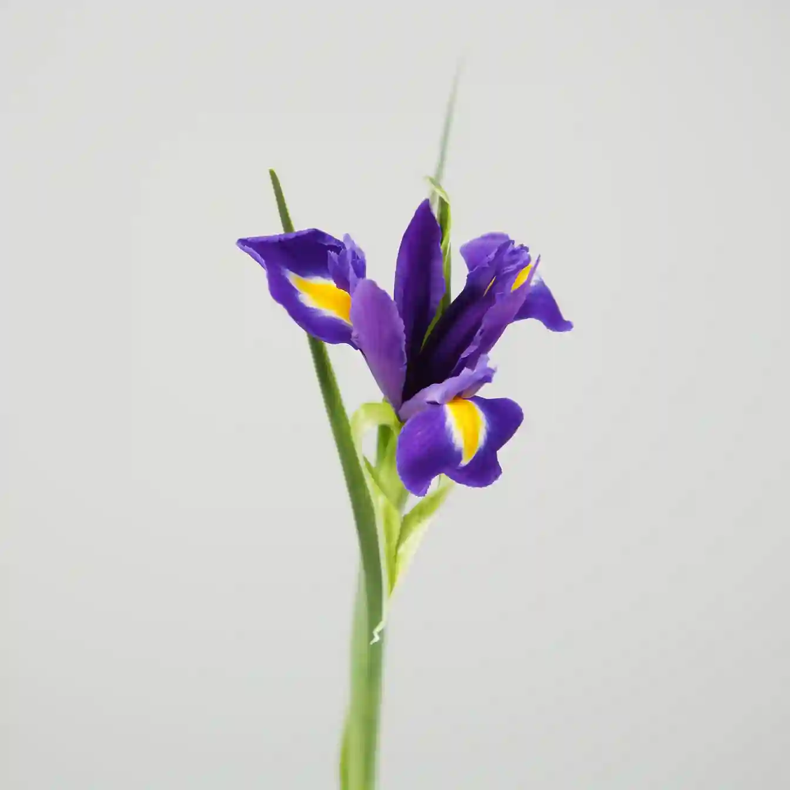

Ирис
Сезон цветения:
Весна-Лето
Срок жизни:
Многолетнее
Высота растения:
15-120 см
Тип:
Корневищное
Описание
Ирис — изысканный цветок с уникальной формой, напоминающей орхидею. Его название в переводе с греческого означает "радуга", что прекрасно отражает богатство цветовой палитры этого растения.
Ирисы известны своими мечевидными листьями и сложными, изящными цветками. Они выращиваются уже более 2000 лет и особенно ценились в древнем Египте и Греции.
Интересные факты
- Символизирует мудрость, доверие и надежду
- Корневища ириса используются в парфюмерии
- Цветок изображен на гербе Флоренции